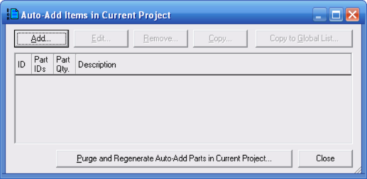
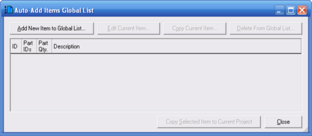
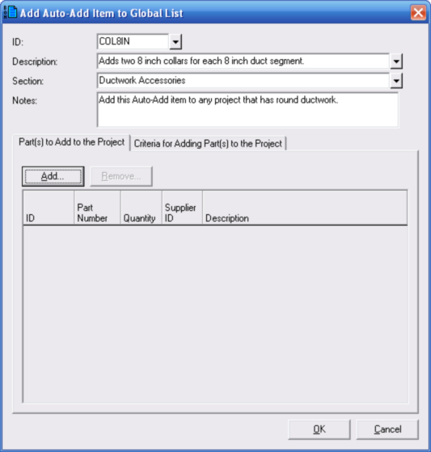
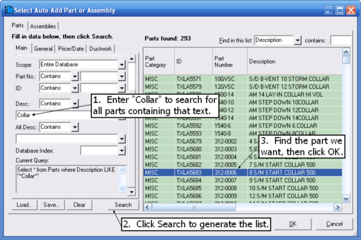
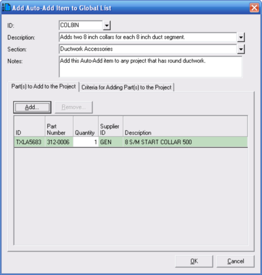
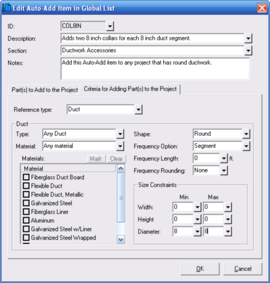
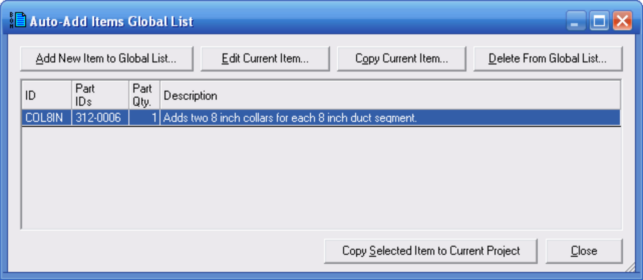
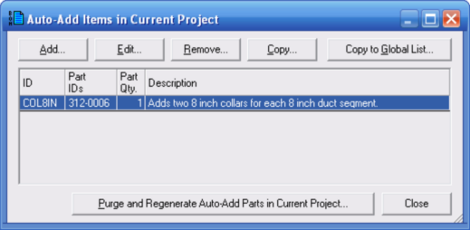
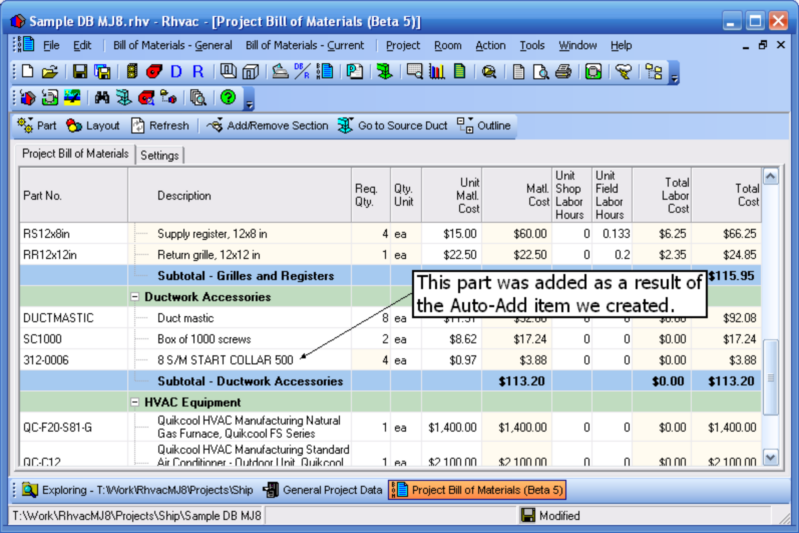

Adding Auto-Add Items (Project Bill of Materials Window) |
  
|
Adding Auto-Add Items (Project Bill of Materials Window) |
|
See also: Convert Auto-Add Part to Regular Part
If you have certain parts that you want to be automatically added to your project bill of materials under certain circumstances, you can define an Auto-Add item to make that happen. From the Project Bill of Materials toolbar, click "Part | Auto-Add Items in Current Project." That will open the "Auto-Add Items in Current Project" dialog, shown below.

Now click the Add button, which will open the "Auto-Add Items Global List" dialog, shown below.

Next, click the "Add New Item to Global List" button, which will open the "Add Auto-Add Item to Global List" dialog, shown below.

At the top of the above dialog fill in the ID, Description, Section and Notes inputs. Then click the Add button, which will open the "Select Auto-Add Part or Assembly" dialog, shown below.

As shown in the picture above, enter "Collar" to search for parts containing that text. Then click the Search button. Then select the part you want and click the OK button. The "Add Auto-Add Item to Global List" dialog will then look like the below picture.

On the above dialog, click the "Criteria for Adding Part(s) to the Project" tab. Then set the inputs as shown in the below picture.

Click OK on the above dialog and the "Auto-Add Items Global List" dialog will look like the below picture.

On the above dialog, click the "Copy Selected Item to Current Project" button. The "Auto-Add Items in Current Project" dialog will then look like the below picture.

Finally, click the Close button on the above dialog. The Project Bill of Materials window will then include a part that was added as a result of the Auto-Add item we just created, as shown below. The "Req. Qty." column will be read-only, since the parameters defined for the Auto-Add will determine the quantity of the part. If you would like to convert the part to a regular part so you can control the quantity directly, see the Convert Auto-Add Part to Regular Part topic.
